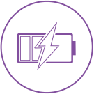
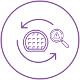
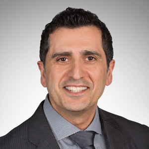

Herta Schreiner (VP of EMC on Synopsys) is very nice to send me the email and value my work!
This page is a demo I created for the SNUG event microsite.
This page is a demo I created for the SNUG event microsite.

Your Innovation, Your Community
April 20-22, 2021

Low Power
Silicon Test & AnalyticsPhD, Chairman & Co-Chief Executive Officer
Synopsys
Tuesday, April 20 | 9:00 AM PDT
Title
Company Name
Wednesday, April 21 | 9:00 AM PDT
Chief Operating Officer
Synopsys

Thursday, April 22 | 9:00 AM PDT
Harum nobissequi deles experae explant, quiatiu mquunti te qui con plab ipsam volupta testian isimust iurehenda dolupti rest, quod quam quae nume niae nulpa sam voluptatem. Nem dercien ditam, odisit que comnihit, consequam quis dolor aut dita inctis sitia in et magnien delibus elestiu sdandunt in non nonserchil modis sant aut pa venda voluptiis dolor alignis accum ame poreped magnimus aspid mollorum fugiaer iossum nobis commos vit omnis et volupidio. Nem fugitibus. Iberent mint res vitatium ea nonsecto vercidi officiam renimag nienihicta nonserum undae.
 Sandra Ng
Sandra NgWe’ve all heard this term in use when we are speaking about reducing the number of coronavirus infections at any given time. But how does “flattening the curve” relate to organisations in the face of an impending recession? How can technology be leveraged to accelerate growth, and hasten the return to growth, while preparing us for the next normal?
 Dave Esber
Dave EsberTrust, empathy, and communication are often viewed as essential to our personal relationships, but all are hard to come by in the digital world – and especially between consumers and businesses. As we all navigate new ways of doing business, we’ll explore the gaps businesses face when trying to engage their customers, and strategies for building meaningful digital relationships that drive customer loyalty.
 Sergiu Bodiu
Sergiu BodiuCompanies are changing the game based on their ways of working, focusing on changing processes and the future of their organizations. Building an adaptive enterprise to hyper-personalize customer experience. Customers are changing too, particularly as our world increasingly relies on digital interaction. Traditional IT systems and processes are failing to keep pace with the accelerating operating cycle times of modern customer engagement. Expectations of service standards and customer experience are rising exponentially. Successful digital transformation is not just about changing technology, it’s also about changing the way organizations work together.
 Colin Priest
Colin Priest Vlad Yordanov
Vlad YordanovThe way businesses operate is changing at an exceedingly rapid pace and leaders are looking for viable strategies in order to stay ahead. Leaders need effective ways to navigate the current changes in the work environment and to shift from LAN to WAN traffic. Join this session as we explore:
 Saakshi Wadhawan
Saakshi WadhawanAs the digital economy continues to grow, how has technology and the gig economy impacted the future workforce? How can organisations plan for a more transient workforce with very different technology requirements?
 Simon PiffSteven Xavier Chan
Simon PiffSteven Xavier Chan Serene Cai
Serene Cai Patrick Wong
Patrick Wong Lu Liu
Lu LiuAt a time where organisations are looking to rapidly drive innovation and new product creation, coworking spaces present themselves as a means to interact with external stakeholders, such as startups, for learning and co-creation opportunities. How can coworking foster a culture of collaboration, cooperation, and co-innovation in a way that can help enterprises successfully drive new product and service development?
 Deepan Pathy
Deepan Pathy Vanathy Senthilathiban
Vanathy SenthilathibanWhile technology has been at the forefront of every digital transformation story, the role of the user and their accceptace is often forgotten. Enterprise technology adoption continues to be a central discussion topic corporations are increasing their investments, turning towards digital technology as a source of competitive advantage. While digital transformation stories painting a picture of technology successfully transforming organisations and boosting revenue continued to fuel the growth of the industry, only 10% of the true potential of technology is being used and adopted by people. Have organisations really experienced true success? Or is it just the glamorization of technology that is helping businesses cope with the modern world, but not truly to be in the forefront of innovation?
 Dr Nicco Tan
Dr Nicco TanOrganisations are excitedly looking towards AI-led personalization experiences, popularised by the likes of Netflix and Spotify. But what really goes on behind the scenes and what do organisations need to know in order to leverage big data, AI and ML to create these capabilities?
 Puneet Garg
Puneet GargIn order for companies to succeed especially on post C-19, they need to look at how they can build foundational as well as future-forward digital capabilities, and in order to do so, need to understand what are the digital and commerce capabilities that they need to double down on in order to build the growth-led organization of the future. Synopsis:
 Caitlin Nguyen
Caitlin Nguyen King Wang Poon
King Wang PoonHow do you roll-out martech with limited budgets when your direct marketing and salesforce team can’t even meet their clients in person? This session will explore how the most important criterion for martech success can actually be first removing the very barriers of technology, so your salesforce can digitally transform into market influencers. You’ll hear how Tupperware Brands has overcome all of these challenges in APAC while evaluating and rolling out Content Management and eCommerce systems.
Kartik Khare Ben Wightman
Ben Wightman Vineet Sharma
Vineet SharmaWhat is the role of the COO in Digital Transformation? What are their responsibilites when it comes to technology and people? And has this changed post-covid?
 Sreeram Iyer
Sreeram IyerExplore the why and how of the need for organisations to embed security, privacy, policy, and controls into their DevOps culture and processes, in order to enable the entire IT organization to share responsibility for security.
 Gina Smith
Gina Smith Phoram Mehta
Phoram Mehta Amit Verma
Amit VermaNavigating uncertainty requires a coherent strategy. A strategy that will minimize the impact of economic disruption, while maintaining business continuity for the rapidly expanding remote workforce. A strategy that uses technology to ensure that security and access governance for all critical systems are in place to optimize flexible workforce. On the financial side, such a strategy will allow you to keep an eye on foreign exchange markets, limiting exposure and finding opportunities as currency fluctuates. It’s agile enough to revise financial assets quickly and ensure cash availability. It protects against increased credit risks and helps you continue to process receivables with speed and efficiency. And a good strategy enables efficient collaboration – and ensures compliance – across all entities. Do you have a strategy, that can safeguard your finances and allow you to emerge on solid ground, in place?
 Chetan Arun Narake
Chetan Arun NarakeAs organizations grapple with the business disruptions caused by COVID-19, some are struggling to regain their footing while some are able to seize opportunities to position themselves for future growth. In crises such as these, it has emphasized the need for CFOs to be more than financial leaders of the company. In this session, find out the impact of COVID-19 on the finance function and how it has forced digital transformation back to the top of CFO agenda.
 George Chuah
George Chuah Mitsu DoshiSereen TeohVineet Sharma
Mitsu DoshiSereen TeohVineet SharmaWhat is the role of the COO in Digital Transformation? What are their responsibilites when it comes to technology and people? And has this changed post-covid?
Sreeram IyerExplore the why and how of the need for organisations to embed security, privacy, policy, and controls into their DevOps culture and processes, in order to enable the entire IT organization to share responsibility for security.
Gina SmithPhoram MehtaVineet SharmaWhat is the role of the COO in Digital Transformation? What are their responsibilites when it comes to technology and people? And has this changed post-covid?
Sreeram IyerExplore the why and how of the need for organisations to embed security, privacy, policy, and controls into their DevOps culture and processes, in order to enable the entire IT organization to share responsibility for security.
Gina SmithPhoram MehtaVineet SharmaWhat is the role of the COO in Digital Transformation? What are their responsibilites when it comes to technology and people? And has this changed post-covid?
Sreeram IyerExplore the why and how of the need for organisations to embed security, privacy, policy, and controls into their DevOps culture and processes, in order to enable the entire IT organization to share responsibility for security.
Gina SmithPhoram MehtaVineet SharmaWhat is the role of the COO in Digital Transformation? What are their responsibilites when it comes to technology and people? And has this changed post-covid?
Sreeram IyerExplore the why and how of the need for organisations to embed security, privacy, policy, and controls into their DevOps culture and processes, in order to enable the entire IT organization to share responsibility for security.
Gina SmithPhoram MehtaVineet SharmaWhat is the role of the COO in Digital Transformation? What are their responsibilites when it comes to technology and people? And has this changed post-covid?
Sreeram IyerExplore the why and how of the need for organisations to embed security, privacy, policy, and controls into their DevOps culture and processes, in order to enable the entire IT organization to share responsibility for security.
Gina SmithPhoram Mehta Sandra NgWe’ve all heard this term in use when we are speaking about reducing the number of coronavirus infections at any given time. But how does “flattening the curve” relate to organisations in the face of an impending recession? How can technology be leveraged to accelerate growth, and hasten the return to growth, while preparing us for the next normal?
Dave EsberTrust, empathy, and communication are often viewed as essential to our personal relationships, but all are hard to come by in the digital world – and especially between consumers and businesses. As we all navigate new ways of doing business, we’ll explore the gaps businesses face when trying to engage their customers, and strategies for building meaningful digital relationships that drive customer loyalty.
Sergiu BodiuCompanies are changing the game based on their ways of working, focusing on changing processes and the future of their organizations. Building an adaptive enterprise to hyper-personalize customer experience. Customers are changing too, particularly as our world increasingly relies on digital interaction. Traditional IT systems and processes are failing to keep pace with the accelerating operating cycle times of modern customer engagement. Expectations of service standards and customer experience are rising exponentially. Successful digital transformation is not just about changing technology, it’s also about changing the way organizations work together.
Colin Priest Vlad YordanovThe way businesses operate is changing at an exceedingly rapid pace and leaders are looking for viable strategies in order to stay ahead. Leaders need effective ways to navigate the current changes in the work environment and to shift from LAN to WAN traffic. Join this session as we explore:
Saakshi WadhawanAs the digital economy continues to grow, how has technology and the gig economy impacted the future workforce? How can organisations plan for a more transient workforce with very different technology requirements?
Simon PiffSteven Xavier Chan Serene Cai Patrick Wong Lu LiuAt a time where organisations are looking to rapidly drive innovation and new product creation, coworking spaces present themselves as a means to interact with external stakeholders, such as startups, for learning and co-creation opportunities. How can coworking foster a culture of collaboration, cooperation, and co-innovation in a way that can help enterprises successfully drive new product and service development?
Deepan PathyVanathy SenthilathibanWhile technology has been at the forefront of every digital transformation story, the role of the user and their accceptace is often forgotten. Enterprise technology adoption continues to be a central discussion topic corporations are increasing their investments, turning towards digital technology as a source of competitive advantage. While digital transformation stories painting a picture of technology successfully transforming organisations and boosting revenue continued to fuel the growth of the industry, only 10% of the true potential of technology is being used and adopted by people. Have organisations really experienced true success? Or is it just the glamorization of technology that is helping businesses cope with the modern world, but not truly to be in the forefront of innovation?
Dr Nicco TanOrganisations are excitedly looking towards AI-led personalization experiences, popularised by the likes of Netflix and Spotify. But what really goes on behind the scenes and what do organisations need to know in order to leverage big data, AI and ML to create these capabilities?
Puneet GargIn order for companies to succeed especially on post C-19, they need to look at how they can build foundational as well as future-forward digital capabilities, and in order to do so, need to understand what are the digital and commerce capabilities that they need to double down on in order to build the growth-led organization of the future. Synopsis:
Caitlin NguyenKing Wang PoonHow do you roll-out martech with limited budgets when your direct marketing and salesforce team can’t even meet their clients in person? This session will explore how the most important criterion for martech success can actually be first removing the very barriers of technology, so your salesforce can digitally transform into market influencers. You’ll hear how Tupperware Brands has overcome all of these challenges in APAC while evaluating and rolling out Content Management and eCommerce systems.
Kartik KhareBen WightmanVineet SharmaWhat is the role of the COO in Digital Transformation? What are their responsibilites when it comes to technology and people? And has this changed post-covid?
Sreeram IyerExplore the why and how of the need for organisations to embed security, privacy, policy, and controls into their DevOps culture and processes, in order to enable the entire IT organization to share responsibility for security.
Gina SmithPhoram MehtaAmit VermaNavigating uncertainty requires a coherent strategy. A strategy that will minimize the impact of economic disruption, while maintaining business continuity for the rapidly expanding remote workforce. A strategy that uses technology to ensure that security and access governance for all critical systems are in place to optimize flexible workforce. On the financial side, such a strategy will allow you to keep an eye on foreign exchange markets, limiting exposure and finding opportunities as currency fluctuates. It’s agile enough to revise financial assets quickly and ensure cash availability. It protects against increased credit risks and helps you continue to process receivables with speed and efficiency. And a good strategy enables efficient collaboration – and ensures compliance – across all entities. Do you have a strategy, that can safeguard your finances and allow you to emerge on solid ground, in place?
Chetan Arun NarakeAs organizations grapple with the business disruptions caused by COVID-19, some are struggling to regain their footing while some are able to seize opportunities to position themselves for future growth. In crises such as these, it has emphasized the need for CFOs to be more than financial leaders of the company. In this session, find out the impact of COVID-19 on the finance function and how it has forced digital transformation back to the top of CFO agenda.
George ChuahMitsu DoshiSereen TeohVineet SharmaWhat is the role of the COO in Digital Transformation? What are their responsibilites when it comes to technology and people? And has this changed post-covid?
Sreeram IyerExplore the why and how of the need for organisations to embed security, privacy, policy, and controls into their DevOps culture and processes, in order to enable the entire IT organization to share responsibility for security.
Gina SmithPhoram MehtaVineet SharmaWhat is the role of the COO in Digital Transformation? What are their responsibilites when it comes to technology and people? And has this changed post-covid?
Sreeram IyerExplore the why and how of the need for organisations to embed security, privacy, policy, and controls into their DevOps culture and processes, in order to enable the entire IT organization to share responsibility for security.
Gina SmithPhoram MehtaVineet SharmaWhat is the role of the COO in Digital Transformation? What are their responsibilites when it comes to technology and people? And has this changed post-covid?
Sreeram IyerExplore the why and how of the need for organisations to embed security, privacy, policy, and controls into their DevOps culture and processes, in order to enable the entire IT organization to share responsibility for security.
Gina SmithPhoram MehtaVineet SharmaWhat is the role of the COO in Digital Transformation? What are their responsibilites when it comes to technology and people? And has this changed post-covid?
Sreeram IyerExplore the why and how of the need for organisations to embed security, privacy, policy, and controls into their DevOps culture and processes, in order to enable the entire IT organization to share responsibility for security.
Gina SmithPhoram MehtaVineet SharmaWhat is the role of the COO in Digital Transformation? What are their responsibilites when it comes to technology and people? And has this changed post-covid?
Sreeram IyerExplore the why and how of the need for organisations to embed security, privacy, policy, and controls into their DevOps culture and processes, in order to enable the entire IT organization to share responsibility for security.
Gina SmithPhoram Mehta Sandra NgWe’ve all heard this term in use when we are speaking about reducing the number of coronavirus infections at any given time. But how does “flattening the curve” relate to organisations in the face of an impending recession? How can technology be leveraged to accelerate growth, and hasten the return to growth, while preparing us for the next normal?
Dave EsberTrust, empathy, and communication are often viewed as essential to our personal relationships, but all are hard to come by in the digital world – and especially between consumers and businesses. As we all navigate new ways of doing business, we’ll explore the gaps businesses face when trying to engage their customers, and strategies for building meaningful digital relationships that drive customer loyalty.
Sergiu BodiuCompanies are changing the game based on their ways of working, focusing on changing processes and the future of their organizations. Building an adaptive enterprise to hyper-personalize customer experience. Customers are changing too, particularly as our world increasingly relies on digital interaction. Traditional IT systems and processes are failing to keep pace with the accelerating operating cycle times of modern customer engagement. Expectations of service standards and customer experience are rising exponentially. Successful digital transformation is not just about changing technology, it’s also about changing the way organizations work together.
Colin Priest Vlad YordanovThe way businesses operate is changing at an exceedingly rapid pace and leaders are looking for viable strategies in order to stay ahead. Leaders need effective ways to navigate the current changes in the work environment and to shift from LAN to WAN traffic. Join this session as we explore:
Saakshi WadhawanAs the digital economy continues to grow, how has technology and the gig economy impacted the future workforce? How can organisations plan for a more transient workforce with very different technology requirements?
Simon PiffSteven Xavier Chan Serene Cai Patrick Wong Lu LiuAt a time where organisations are looking to rapidly drive innovation and new product creation, coworking spaces present themselves as a means to interact with external stakeholders, such as startups, for learning and co-creation opportunities. How can coworking foster a culture of collaboration, cooperation, and co-innovation in a way that can help enterprises successfully drive new product and service development?
Deepan PathyVanathy SenthilathibanWhile technology has been at the forefront of every digital transformation story, the role of the user and their accceptace is often forgotten. Enterprise technology adoption continues to be a central discussion topic corporations are increasing their investments, turning towards digital technology as a source of competitive advantage. While digital transformation stories painting a picture of technology successfully transforming organisations and boosting revenue continued to fuel the growth of the industry, only 10% of the true potential of technology is being used and adopted by people. Have organisations really experienced true success? Or is it just the glamorization of technology that is helping businesses cope with the modern world, but not truly to be in the forefront of innovation?
Dr Nicco TanOrganisations are excitedly looking towards AI-led personalization experiences, popularised by the likes of Netflix and Spotify. But what really goes on behind the scenes and what do organisations need to know in order to leverage big data, AI and ML to create these capabilities?
Puneet GargIn order for companies to succeed especially on post C-19, they need to look at how they can build foundational as well as future-forward digital capabilities, and in order to do so, need to understand what are the digital and commerce capabilities that they need to double down on in order to build the growth-led organization of the future. Synopsis:
Caitlin NguyenKing Wang PoonHow do you roll-out martech with limited budgets when your direct marketing and salesforce team can’t even meet their clients in person? This session will explore how the most important criterion for martech success can actually be first removing the very barriers of technology, so your salesforce can digitally transform into market influencers. You’ll hear how Tupperware Brands has overcome all of these challenges in APAC while evaluating and rolling out Content Management and eCommerce systems.
Kartik KhareBen WightmanVineet SharmaWhat is the role of the COO in Digital Transformation? What are their responsibilites when it comes to technology and people? And has this changed post-covid?
Sreeram IyerExplore the why and how of the need for organisations to embed security, privacy, policy, and controls into their DevOps culture and processes, in order to enable the entire IT organization to share responsibility for security.
Gina SmithPhoram MehtaAmit VermaNavigating uncertainty requires a coherent strategy. A strategy that will minimize the impact of economic disruption, while maintaining business continuity for the rapidly expanding remote workforce. A strategy that uses technology to ensure that security and access governance for all critical systems are in place to optimize flexible workforce. On the financial side, such a strategy will allow you to keep an eye on foreign exchange markets, limiting exposure and finding opportunities as currency fluctuates. It’s agile enough to revise financial assets quickly and ensure cash availability. It protects against increased credit risks and helps you continue to process receivables with speed and efficiency. And a good strategy enables efficient collaboration – and ensures compliance – across all entities. Do you have a strategy, that can safeguard your finances and allow you to emerge on solid ground, in place?
Chetan Arun NarakeAs organizations grapple with the business disruptions caused by COVID-19, some are struggling to regain their footing while some are able to seize opportunities to position themselves for future growth. In crises such as these, it has emphasized the need for CFOs to be more than financial leaders of the company. In this session, find out the impact of COVID-19 on the finance function and how it has forced digital transformation back to the top of CFO agenda.
George ChuahMitsu DoshiSereen TeohVineet SharmaWhat is the role of the COO in Digital Transformation? What are their responsibilites when it comes to technology and people? And has this changed post-covid?
Sreeram IyerExplore the why and how of the need for organisations to embed security, privacy, policy, and controls into their DevOps culture and processes, in order to enable the entire IT organization to share responsibility for security.
Gina SmithPhoram MehtaVineet SharmaWhat is the role of the COO in Digital Transformation? What are their responsibilites when it comes to technology and people? And has this changed post-covid?
Sreeram IyerExplore the why and how of the need for organisations to embed security, privacy, policy, and controls into their DevOps culture and processes, in order to enable the entire IT organization to share responsibility for security.
Gina SmithPhoram MehtaVineet SharmaWhat is the role of the COO in Digital Transformation? What are their responsibilites when it comes to technology and people? And has this changed post-covid?
Sreeram IyerExplore the why and how of the need for organisations to embed security, privacy, policy, and controls into their DevOps culture and processes, in order to enable the entire IT organization to share responsibility for security.
Gina SmithPhoram MehtaVineet SharmaWhat is the role of the COO in Digital Transformation? What are their responsibilites when it comes to technology and people? And has this changed post-covid?
Sreeram IyerExplore the why and how of the need for organisations to embed security, privacy, policy, and controls into their DevOps culture and processes, in order to enable the entire IT organization to share responsibility for security.
Gina SmithPhoram MehtaVineet SharmaWhat is the role of the COO in Digital Transformation? What are their responsibilites when it comes to technology and people? And has this changed post-covid?
Sreeram IyerExplore the why and how of the need for organisations to embed security, privacy, policy, and controls into their DevOps culture and processes, in order to enable the entire IT organization to share responsibility for security.
Gina SmithPhoram Mehta
Sandra Ng
Group Vice President, Practice Group, IDC Asia/Pacific

Jonathan Wong
Chief of Technology and Innovation, Economic and Social Commission for Asia and the Pacific, United Nations

Sylvie Ouziel
International President, Envision Digital International Pte. Ltd.

Chandrani Chakraborty
Group Head of Capablilty & Learning Strategies, Head of HR Asia, QBE Asia

Dr Nicco Tan
Vice President, Marketing, Resorts World Genting

Vineet Sharma
Chief Operating Officer, Pizza Hut

Amit Verma
Regional Director, oCFO Solutions, Asia Pacific & Japan, SAP Asia
Sergiu Bodiu
APAC Transformation Office, Principal Transformation Specialist, Red Hat

Serene Cai
Co-Founder, SpeedDoc & Vice President, Sharing Economy Association of Singapore

Steven Xavier Chan
Senior Director and Regional Head of Government Relations, Asia-Pacific, PayPal

Simon Piff
Vice President, Security & Future of Work Practice, IDC Asia/Pacific

Puneet Garg
Head of Data Science, Carousell

Sreeram Iyer
Chief Operating Officer, Institutional Business, ANZ Bank

Chetan Arun Narake
Trade Advisor for the Ministry of Thailand, DITP India

Caitlin Nguyen
Digital Transformation Lead, Consumer Healthcare - APAC, China, Eurasia, Middle East, Africa, Sanofi

Vlad Yordanov
Senior Director of Solution Engineering, Asia Pacific & Japan, Gigamon

Lu Liu
Co-Founder, Chief Operating Officer, JustCo

Patrick Wong
Country Manager, Gogovan President, Sharing Economy Association of Singapore

Ben Wightman
Head of Data and Analytics, Wunderman Thompson Singapore
Kartik Khare
Vice President, Marketing and Digital, Tupperware Brands

Phoram Mehta
APAC Chief InfoSec Officer, PayPal

Gina Smith
Research Manager, IDC Asia/Pacific

Mitsu Doshi
CFO, FoodPanda APAC

Sereen Teoh
Chief Financial Officer, AirAsia Big Loyalty

George Chuah
CFO, IDC

Zohar Cohen
Director of Sales, Juniper Networks Asia Pte Ltd

Christopher Lee Marshall
Associate Vice President, Big Data, Analytics and AI practice, IDC Asia/Pacific (Moderator)

King Wang Poon
Director, LKY Centre for Innovative Cities & Senior Director, Strategic Planning, SUTD

Jaclyn Lee
CHRO, SUTD

Shivani Saini
Vice President, Global Consumer and Customer Tech Products, GSK Consumer Healthcare

Siddharth Malhi
Vice President, Global Shared Services, Agility Logistics Ltd
SNUG thanks the members of the Technical Committee who volunteer their time and expertise to support SNUG’s technical quality, local perspective and value to the users of Synopsys tools and technology.

Savita Banerjee leads DFX strategy for Augmented Reality products at Facebook Reality Labs. She received her Ph.D. from the University of Massachusetts at Amherst and started her career at Bell Labs. Savita is recognized for her contributions to advancements in silicon technology for storage, networking, data centers and AR/VR applications. At Microsoft, she led design for test strategy for Hololens and Xbox utilizing advanced process nodes with optimized flows to meet their stringent product requirements. She is passionate about building disruptive technologies for next generation compute platforms that improve how we work, communicate, and have fun.
Savita is committed to global citizenship, youth empowerment and cultivating diversity and inclusion at work. She is the proud mother of two who loves the outdoors, classic rock and making pizza.
Sergei Babokhov, Intel
Mike Bartley, Test Verification and Solutions
Gregg Bromley, GEO Semiconductor
David Brownell, Analog Devices
Thomas Buerner, Nokia
Ahmet Ceyhan, Intel
Tarun Chawla, STMicroelectronics
Leah Clark, Synopsys
Jon Colburn, NVIDIA
Andy Copperhall, Independent
Cliff Cummings, Paradigm Works
Al Czamara, Test Evolution
Pierluigi Daglio, STMicroelectronics
Jack Dong, Intel
Ravikishore Gandikota, NVIDIA
Majid Ghameshlu, Siemens AG (Austria)
Ralph Goergen, NXP Semiconductors
Ronald Goodstein, Lockheed Martin
Peter Grove, Dialog Semiconductor
Anwarul Hasan, Independent
Zafar Hasan, NVIDIA
Richard Illman, Dialog Semiconductor
Anand Iyer, Microsoft
Ronald Kalim, Intel
Brian Kane, Northrop Grumman
Chris Kiegle, Marvell Semiconductor
Victoria Kolesov, Intel
Mohan Krishnareddy, Arteris
Claus Kuntzsch, University of Applied Sciences Nuremberg
Farid Labib, GLOBALFOUNDRIES
Besson Laurent, Easii IC
Boris Litinsky, Juniper
Charles Magnuson, Intel
Tom Mahatdejkul, Arm
Corbett Marler, Intel
Stella Matarrese, STMicroelectronics
Karsten Matt, GLOBALFOUNDRIES
Didier Maurer, IC'ALPS
Glen McDonnell, Broadcom
Don Mills, Microchip
Jeff Montesano, Verilab
Bryan Morris, Ciena
Naveen Mysore, Intel
Meloux Nathalie, STMicroelectronics
Nitin Navale, Xilinx
Giuseppe Notarangelo, STMicroelectronics
Firouzeh Nourkhalaj, Synopsys
Sathappan Palaniappan, Broadcom
Sachin Parikh, Broadcom
Olivia Poon, Marvell Semiconductor
Frank Poppen, OFFIS - Institute for Information Technology
Herbert Preuthen, GLOBALFOUNDRIES
PD Priyadarshan, Cisco
Karthik Rajan, Microchip
Francois Ravatin, STMicroelectronics
Jeremy Ridgeway, Broadcom
Chris Ryan, Maxim Integrated
Jason Rziha, Microchip
Kiran Sama, Amazon
Robert Siegmund, GLOBALFOUNDRIES
Grimpen Soenke, Infineon
Neel Sonara, Broadcom
Mark Sprague, Intel
Matthew Streyle, Samsung
Ravish Sunny, Intel
Manfred Thanner, NXP Semiconductors
Tony Todesco, AMD
Jeff Vance, Verilab
Raj Varada, Intel
Sudha Vasu, NVIDIA
Sandeep Venishetti, Google
Upasna Vishnoi, Marvell Semiconductor
Viba Viswanathan, Samsung
Krishna Vittala, Microchip
Jon Wei, NovuMind
Jing Zhang, Intel